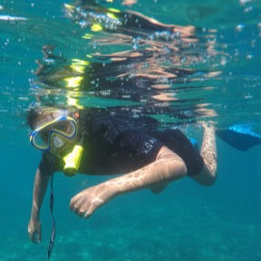
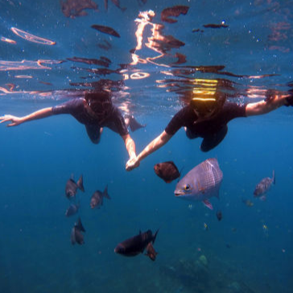
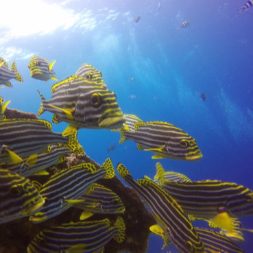
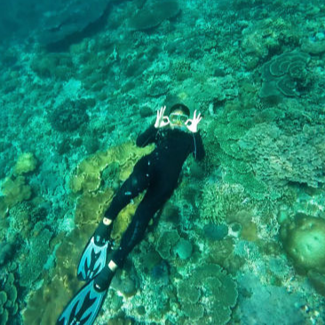

Go on one of our amazing snorkeling trips. You can snorkel on coral bommies and white sand bottoms, the shipwreck of a World War II transport ship, or the magical Manta Rays at Nusa Penida. Snorkeling is something that anyone can do, even if they can't swim.
If you don't like Scuba diving, there are many other ways to explore the underwater world of Bali. Snorkeling is the most popular one. We've chosen some of the best snorkeling spots in Bali so you can enjoy and learn about the underwater world. The visibility will be great, and the marine life and corals will be even better. Bring a camera or rent one from us to make sure you have a record of all the great memories you will make on your trip with Bali Diving.
Snorkeling is something that almost anyone can do as long as they are generally healthy. Anyone of any age, from 8 to 80 or even older or younger, can dive or snorkel in the waters around Bali and see how beautiful it is down there. It's something the whole family can do, and of course, it's not too expensive. Bali Diving takes you to the same places where we take our divers, so you can see Bali's best underwater sights. Our packages include everything: bottled water, experienced dive guides, the use of all gear, and a delicious lunch. If you add us as a friend on Facebook, we'll tag you in any photos we take to remember your time with us.
You'll have your own guide with you who can show you around the reefs and make sure you have a great time. Tulamben, Padang Bai, and Nusa Penida are all good places to snorkel in Bali. Check out our snorkeling spots below to get an idea of what you could be doing when you come snorkeling with Bali Diving. We have access to all of Bali, so if there are any special places you want to see that we haven't listed, please let us know. We also offer snorkeling tours, which we can put together for you over a number of days and for a certain number of people. Send us an email to learn more.

Padangbai is located in the western coast of Bali about one hour drive from Bali Diving office. Situated in the …

Unlike other places for snorkeling Tulamben offers unique underwater scenery visible from the surface…

Amed is a long coastal strip of fishing villages in Karangasem Regency, Bali, Indonesia. It is an area developing for tourism while ...

To many SCUBA divers Nusa Penida is where to go for mola-mola the sunfish seeing.